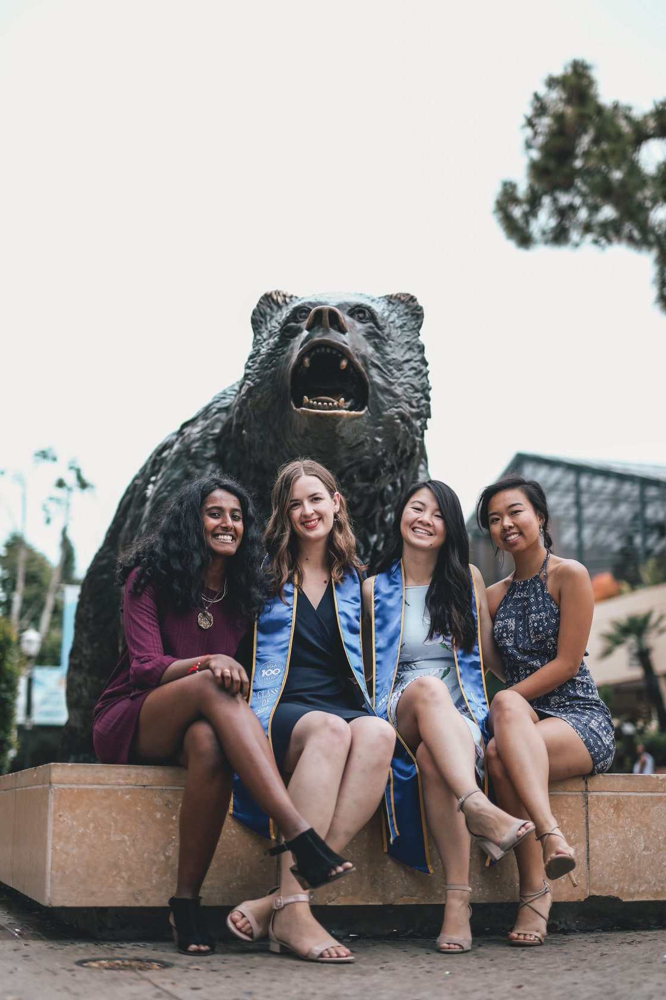
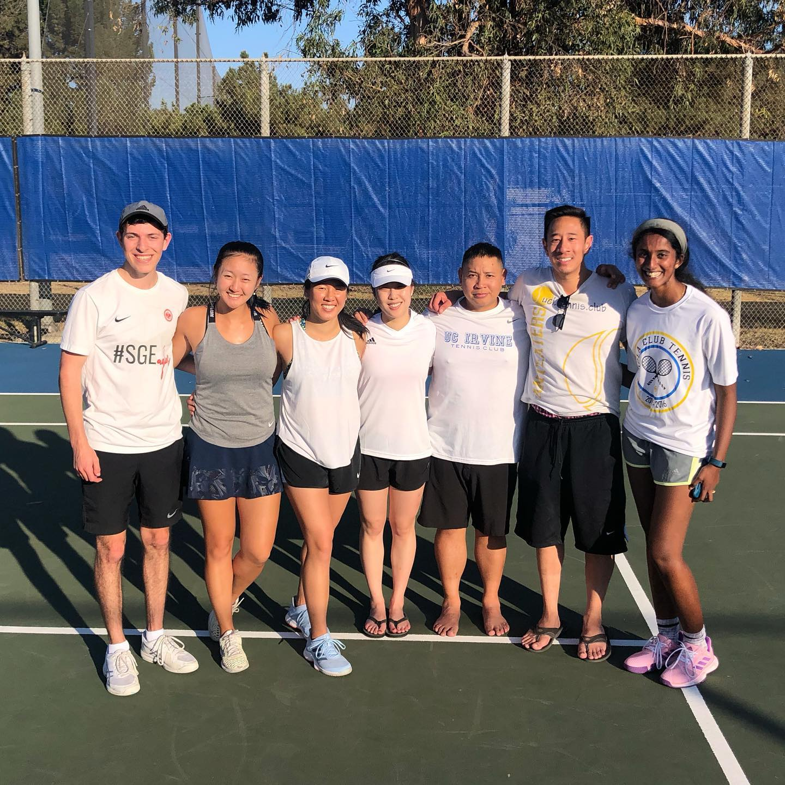
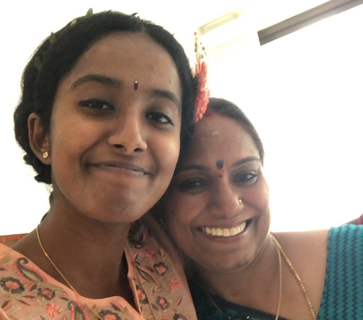
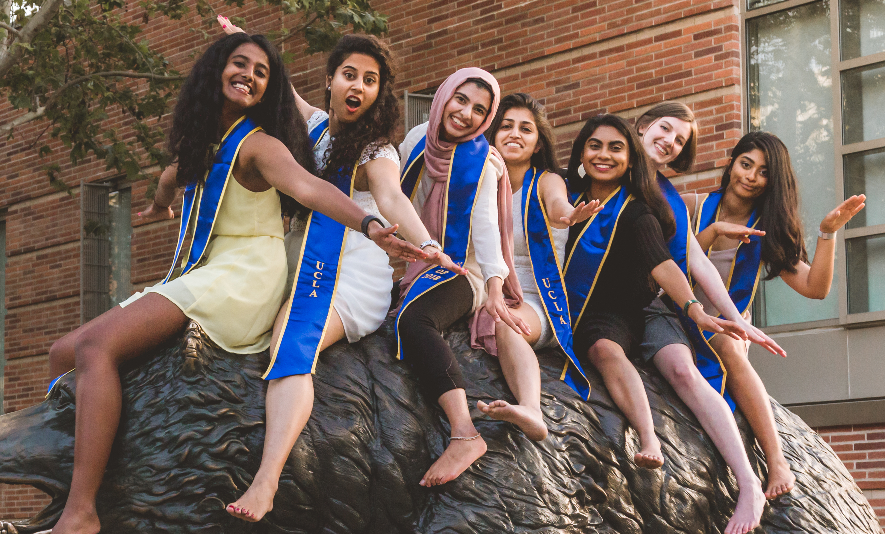

1 / 6

I bleed blue and gold. UCLA was where I grew so much, both academically and personally, and where I met many of my closest friends.
In this picture, you can see me and my closest fellow Salt & Straw aficionados.
2 / 6

Tennis on Campus was a huge part of my UCLA experience, and USTA leagues have been a great way for me to continue playing tennis after graduating. That LA sun doesn't hurt either.
3 / 6

My Indian heritage is a huge part of my identity, and my mother is a big reason for that. From attending religious functions with her,
to learning Hindi from watching Bollywood movies with her, to mastering authentic recipes by helping her in the kitchen, I'm grateful for the Indian values my mother
has given me.
4 / 6
A goal of mine is to become more of a traveler, and this trip to Vancover with one of my best friends is a major reason why!
5 / 6

My dad and sister are two of my biggest career role models. While my engineer dad and sister may have been disappointed that I didn't
follow in their footsteps, they always supported me and always provide me with salient advice.
6 / 6

I chose to major in Statistics late in my second year at UCLA based on the fact that I didn't want to go deep into Math and wanted something more quantitative than Economics.
It was a risky decision because I didn't have a lot of time to finish the major, but it ended up paying off. I loved my classes, and ended up meeting a great group of girls who continue to inspire me long after UCLA!